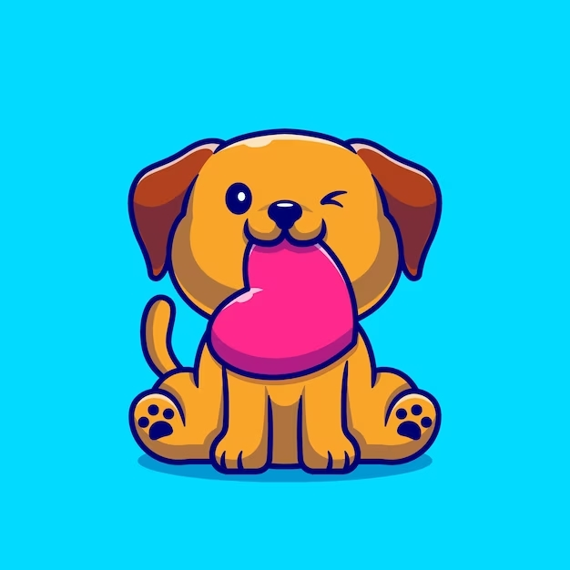
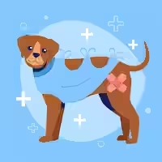

¿Qué sabemos acerca de nuestros peludos?
Son animales de compañía que sienten emociones, dolor, placer, empatía, alegría y miedo, según la Declaración de Cambridge sobre la Conciencia en animales. Aún así, hoy en día se sigue discutiendo acerca de su capacidad cognitiva, y la capacidad de poder desarrollar reflexiones acerca de sus actos
Estudios Actuales
Un estudio realizado por Gregory Berns reveló que los perros poseen las mismas estructuras cerebrales que nosotros y procesan las emociones en unas regiones muy profundas de su cerebro que forman el sistema límbico. Lo que sí es seguro es que los animales son seres sensibles, que pueden desarrollar vínculos afectivos tanto con humanos como con otros animales, así como pueden ser víctimas del dolor y del estrés cuando son sometidos a un entorno negativo, a malos tratos o al abandono.
Otro de los hallazgos, fue que el organismo de los perros también genera oxitocina, más conocida como la "hormona del amor", según la investigación del Dr. Berns fue que la respuesta neuronal más positiva en todos los perros ha ocurrido cuando han percibido el olor de su "humano favorito", estimulando una región cerebral conocida como núcleo caudado que está asociada al amor tanto en los perros como en las personas. Cuando el can percibe el olor a su dueño y, a su hogar, se produce un incremento en la producción y segregación de oxitocina, que permite que nuestros peludos luzcan tan felices y excitados cuando nos ven o comparten buenos momentos con nosotros.

Por último...
Se determinó que la inteligencia de un perro adulto es similar a la de un niño de 3 años. Un estudio en Viena revela que fueron mas “espabilados” para superar una de las pruebas del experimento. A ambos, se les dió una caja con una palanca que al presionarla permitía acceder a lo que había en su interior, en la cual los perros y niños lograron esta parte con facilidad. Sin embargo, la caja volvió a cerrarse y la palanca ya no permitía el acceso a la misma.
Los niños de 3 años seguían insistiendo con la palanca con el fin de poder abrirla, mientras que los perros directamente abrieron la caja olvidando la palanca tras comprobar que ya no servía. «El aumento de la evidencia apoya la idea de que seres humanos y perros comparten algunas habilidades sociales; el comportamiento sociocognitivo de los perros, por ejemplo, se asemeja al de un niño de entre 6 meses y 3 años de edad, en muchos aspectos», afirma József Topál, de la Academia Húngara de Ciencias, quien añade que «la utilización de señales ostensibles es una de estas características: los perros, así como los bebés humanos, son sensibles a las señales que indican la intención comunicativa».

Investigaciones a lo largo del tiempo
¡Descubrí cada etapa!
-
1880
Louis Pasteur crea la vacuna contra la rabia
Al inyectar tejido nervioso infectado en perros, logró crear una versión debilitada del virus. Esta vacuna inmunizó a los perros, haciéndolos resistentes al virus. Su vacuna fue exitosa, reduciendo la incidencia de rabia en humanos. Posteriormente, fue reemplazada por una vacuna producida en cultivos celulares después de la Segunda Guerra Mundial.
-

1950
Dr. Peter Geraldson crea la vacuna contra la Hepatitis
Gracias a la vacuna contra la hepatitis canina, se ha logrado prevenir y reducir la incidencia de esta enfermedad en los perros. La vacuna estimula la respuesta inmune del perro para que desarrolle anticuerpos protectores contra el virus del CAV-1. Esto ayuda a proteger al perro de infecciones graves en el hígado y evita complicaciones potencialmente mortales.
-
1970
Bruce Coyne crea la vacuna contra el Parvovirus
Fue fundamental en la prevención y control del parvovirus, una enfermedad gastrointestinal grave en los perros. Gracias a la vacuna, se ha reducido la incidencia de la enfermedad y se han salvado numerosas vidas caninas. La vacuna se administra en varias dosis y se realiza un refuerzo anual para mantener la inmunidad
-

1978
Henri Carré creó la vacuna contra el moquillo canino
Su contribución fue fundamental para el control y la prevención de esta enfermedad en los perros. Gracias a su trabajo, se logró desarrollar una vacuna efectiva que ha salvado innumerables vidas caninas y ha sido fundamental en la protección contra el moquillo
-
Infórmate